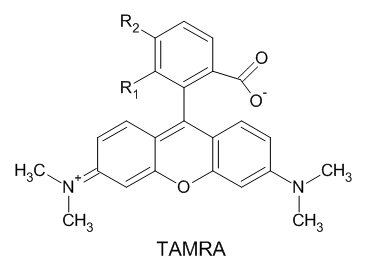
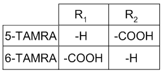
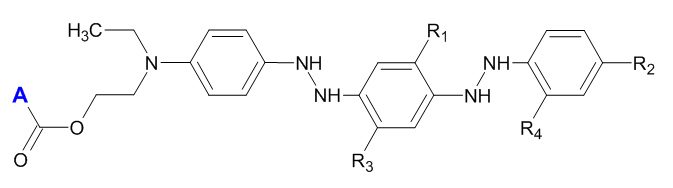
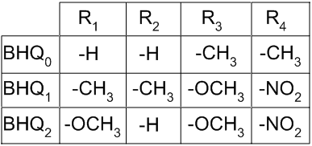
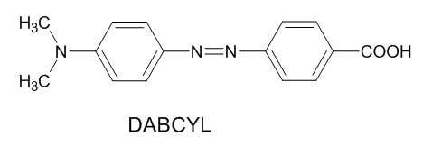
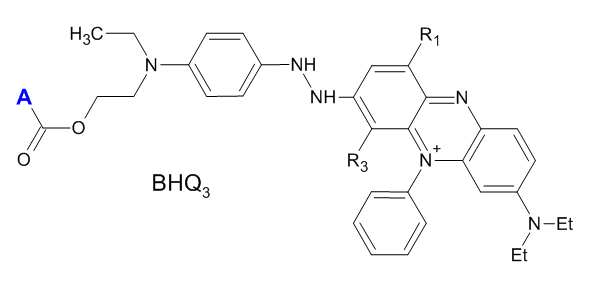

Real-Time PCR and Its Equipment
This is an Abiyotek internal document. Do not share with others outside of Abiyotek.
Supply all consumables necessary in a kit to conduct qPCR for the following targets:
Important principles, terms, and definitions are addressed here.
The purpose of PCR is to take a small amount of DNA and make a large number of copies of that DNA (usually a fragment of it). PCR requires the following components in the reaction tube:
Most PCR tubes are of a conical shape, with a standard conical shape
Quantitative PCR is any PCR-based method that can provide in its result an estimation of the amount of DNA in the (starting/original) sample, usually as an integer value representing the number of copies of the genome (genomic equivalents).
[A word about RT-PCR: the abbreviation RT-PCR has a confusing usage, because it can be used as shorthand for reverse-transcription polymerase chain reaction as well as real-time polymerase chain reaction, and those two terms refer to different things. In fact, you can combine reverse transcription with a real-time PCR system....what do you call it then? (RT)2-PCR? The convention is to shorthand real-time PCR as qPCR or Q-PCR, but you should understand that not all quantitative PCR needs to be real-time.]
The term real time PCR
really means a PCR reaction that you can follow
as it is happening. It can be quantitative and usually is. Many assays in which
a reaction can be followed over time come in two types:
stoppingreagent).
continuously(while it is happening), or at least at meaningful time period intervals (every 15 or 30 or 60 or 120 seconds). A good signal vs time plot
Note that the term assay is any kind of test or reaction which produces a value representing quantity or amount of something. So both qPCR and real-time PCR.
Clearly kinetic assays would be preferable, since they include the concept of an end-point signal value in them. Moreover, kinetic assays can reveal if the reaction is occurring properly or according to expectations, and continuous measurement can help to troubleshoot problems with sample complexity, poor method configuration, improvements in instrument or container design and engineering. Instruments capable of kinetic measurements would likely be much more difficult to design and configure, and thus the hardware and software is probably more expensive.
TaqMan. The TaqMan PCR was developed by Applied Biosystems in which a fluorescent probe that cannot be extended by DNA polymerases hybridizes to its complement if it is present and a 5′→3′ exonuclease degrades the double-stranded formation, releasing a fluorophore. When the fluorophore is still part of oligo, its fluorescence is quenched by another label on the oligo which stops the fluorescence. This sort of assay can be multiplexed with several targets and use of filters that have excitation and emission differences. Phosphorylation of the 3′ end can inhibit extension.
Light Upon eXtension (LUX). This system by Invitrogen makes use of a hairpinned primer in which the 3′ end has the fluorophore and the 5′ end has the quencher. As hybridization occurs with unfolding during amplification cycle
The term multiplex
refers to the ability to examine/determine/assay
more than one analyte in a single (the same) (PCR) reaction tube. This has
numerous benefits, including rapid time to multiple target/analyte determination,
lower consumable cost, maximum information from minimal sample, and most
important, reduces technical variation that might require more controls to
test for differences in reaction conditions.
GMO Testing. An example is given by Bio-Rad to demonstrate its iCycler iQ real-time PCR system. Roundup-Reday soya (RRS) in GMO soya was tested using a soya lectin as endogenous control and the CP4SPSPS gene specific for RRS. An oligo probe with FAM and Black Hole Quencher 1 was constructed along with specific primers. Lectin was also to be detected with a HEX/Black Hole Quencher 2 dual-labeled probe. DNA prepared from soya bean power standard (Fluka) with 2% GMO (2% RRS in 100% soya) was used to make dilutions for standard curve: 0. 02 to 2.0 ng RRS and 1 to 100 ng soya. Also DNA was extracted from 0.1% and 1. 0% RRS soya bean powder standards (Fluka), and used as control (references). Percentages were calculated based on the threshold cycle values (CT), and RRS DNA normalized to amount of lectin DNA to determine % RRS/soya in unknowns and references. Standard curves were determined with four replicates per dilution to make the curve. Amplification efficiences can be determined from the linear fit of the standard curve. Unknowns were amplified along with references in triplicate.
Gene Expression Analysis. Human prostate and thymus tissue were tested for expression of two enzymes ornithine decarboxylase (ODC) and S-adenosylmethionine decarboxylase (AdoMetDC), and compared to a reference gene β-actin. These enzymes are rate-limiting in polyamine biosynthesis. Generally the prostate produces higher levels of polyamines compared to thymus. RNA was extracted from these tissues and 1 mM oligo dT12-18 was used with 1.0 µ RNA in a 20 µl 1st strand synthesis with SuperScript II reverse transcriptase (Invitrogen). A 5-fold dilution series was generated from the cDNA synthesis, and relative quantitation was based on ΔΔCT method with equivalent of 0.08 µl of the cDNA synthesis product. PCR was in 25 or 50 µl: 20 mM TrisHCl pH 8.4, 50 mM KCl, 0.2 mM dNTPs 0.5 µM primers, 0.2 µM oligo probes, 3.5 mM MgCl2. PCR efficiency validation was done with dilution series duplicate reactions. Four replicates were used for the relative quantitation (ΔΔCT) method. Polymerase was 0.625 U for singleplex, and 1.875 for triplex reactions. PCR is 3 min 95°, 45 cycles fo 57° for 30 sec (anneal+extension), and 95° 10s for denaturation. Use of ΔΔCt method requires multiplexed genes to be amplified with approx same efficiency, and the efficiency should not be significantly different between singleplex and triplex systems. At first each target is checked as a singleplex so that starting amounts of cDNA, slope of the curve, PCR efficiency and correlation coefficient are determined. In most cases efficiencies are > 90% with well-designed PCR.
Optimization has many goals. One might be to reduce time of assay. Another might be material cost. Another might be to improve sensitivity or dynamic range of assay. Steps to combine annealing and extension steps with no temperature change can reduce total time. Improving design of primers and probe can affect sensitivity and time of assay. Better master mixes reduce variation. Thin-wall containers with high heat coefficients improve time and accuracy. Optimal targets will have amplicon < 150 bp while maintaining specificity (range might be from 75-300 bp). Polymerases operating at lower temperature (down to 60°) can improve work. Primers should anneal at a target T m = 60°; modified base use in primer can be used to fine-tune the Tm. For short amplicon size, a 15 s 95° is actually excessive: half that is possible.
| SYBR Green |
| FAM |
| VIC |
| JOE |
| NED |
| TAMRA |
| TET |
| Texas Red |
| ROX
5- or 6-carboxy-X-rhodamine, succinimidyl ester, FW = 631.6836 |
| Cy3 |
| Cy5 |
Structure for the fluorophore TAMRA family is shown below. Typical members are 5-TAMRA [CAS 91809-66-4] and 6-TAMRA [CAS 150322-06-8].


N-(1-Naphthyl)ethylenediamine dihydrochloride [CAS 1465-25-4]
The ideal quencher is an molecule that can absorb light without emitting or producing any fluorescence itself.
The BHQ dyes are true dark quenchers in that they produce not native emission contributing to a high background signal. They have a polyaromatic-azo backbone. Their general structure is below:


| Name | Absorption Max | Absorption Range | Comments |
|---|---|---|---|
| DABCYL | signal:noise reduced  | ||
| TAMRA | has residual background signal | ||
| Black Hole Quencher 0 (BHQ-0) | 493 | 430-520 nm | |
| Black Hole Quencher 1 (BHQ-1) | 534 | 480-580 nm | |
| Black Hole Quencher 2 (BHQ-2) | 579 | 560-670 nm | |
| Black Hole Quencher 3 (BHQ-3) | 672 | 620-730 nm |  |
Information from the TORCH products at the PCR diagnostics.eu web site. The entire catalog (2012 products) is also in a PDF.
Produced by Russian Central Research Institute for Epidemiology. Kits have the CE-IVD marking.
Kits have two styles of packaging:
Kits are compatible with following fluorescent real-time detection technology:
Kit systems are:
The list below was taken from Life Tech/Invitrogen web site. There is also a PDF brochure.
All systems have sensitivity down to 1 copy of the template DNA.
The list below was taken from Bio-Rad web site.
Bio-Rad features the following real-time PCR systems:
iCycler iQ. System capable of 4-color multiplex PCR
An Asian manufacturer who makes the Swift™ Spectrum 48 and 96 Real Time Thermal Cyclers.
The 48-well thermal cycler has 4 color reading at excitation = 470, 523, 543, and 571, and emission at 525, 564, 584, and 612 for FAM, SYBR Green 1, HEX, VIC, TAMRA, Texas Red, and ROX. Block temperature uniformity is ± 0.3° C. Sample volumes are 10-100 µl for 200 µl capacity, and sensitivity is from 10 to 1010 copies.
The 96-well thermal cycler has 6-8 channles color reading at excitation = 470, 523, 543, 628, and 678 nm, and the emission at 525, 564, 584, 612, 692, and 718 nm for FAM, SYBR Green 1, Cy3, 5-TAMRA, NED, Cy5, HEX, VIC, TAMRA, TET, JOE, Texas Red, ROX, Light Cycler Red Quasar 705. Block temperature uniformity is ± 0.3° C. Sample volumes are 5-100 µl for 200 µl capacity, and sensitivity is from 10 to 1010 copies.
Fully automated DNA purifiers have several advantages to the clinical (medical technology / diagnostics) industry: hospitals and private laboratories.
A Life Technologies product. Purification is an ion-exchange system that does not use guanidine, EtOH or silica systems. All buffers are aqueous and do not inhibit PCR, qPCR, real time PCR, STR, sequencing, and WGA. Processes 12 samples and 1 control per run, with the ability to load 16 runs (total 192 samples) in a conveyor, complete in 8-hour workday. Reagent cartridges and tips are loaded first, then the samples, and a protocol selected. Consumable products come in the form of the following kits:
touch DNAon tools, mobile phones, etc. The Buccal Cell kit will get 1-3 µg gDNA from swabs. Isolated using magnetic particles having a ChargeSwitch ionizing ligand.